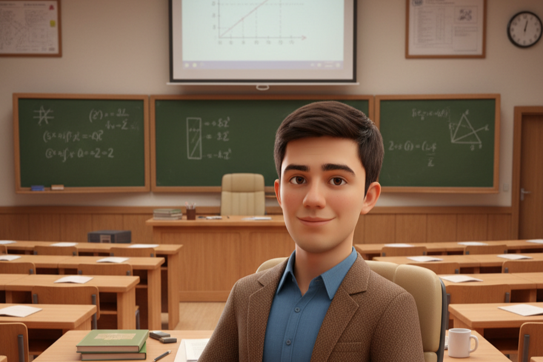
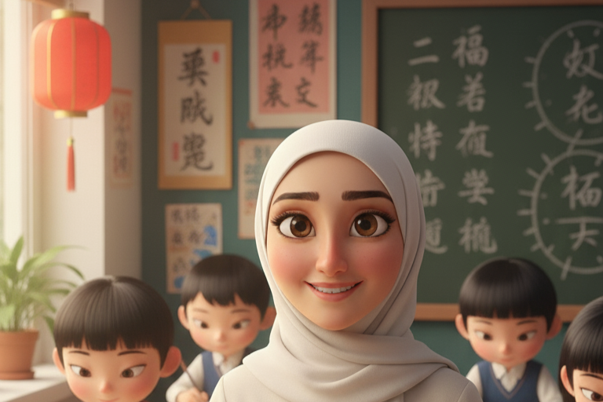
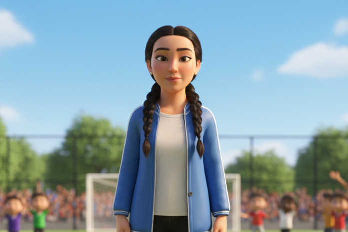
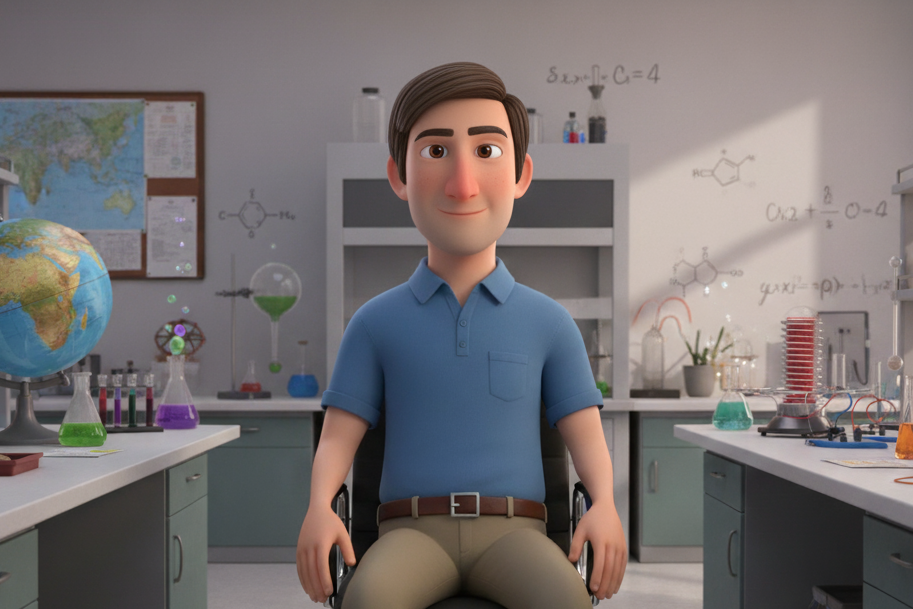
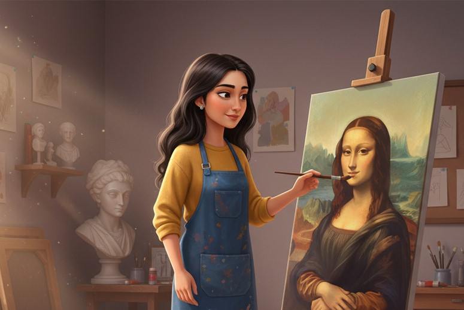
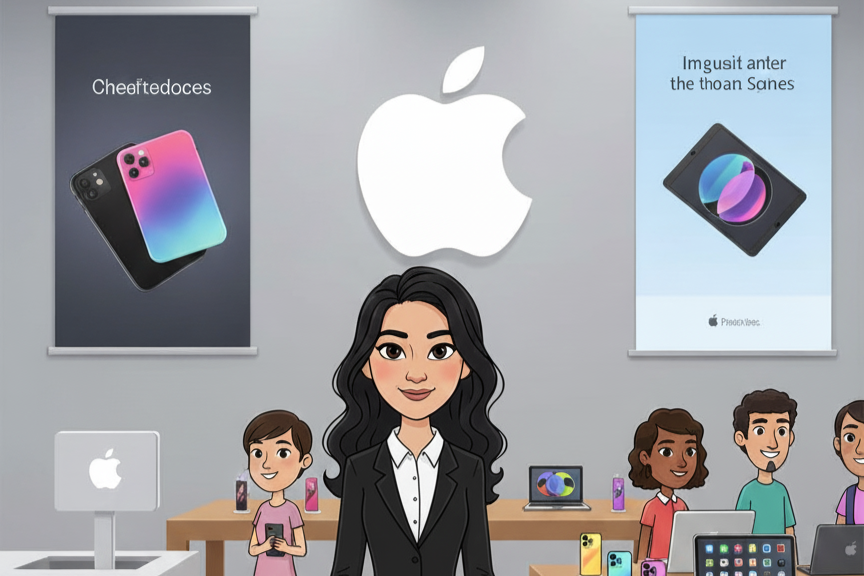
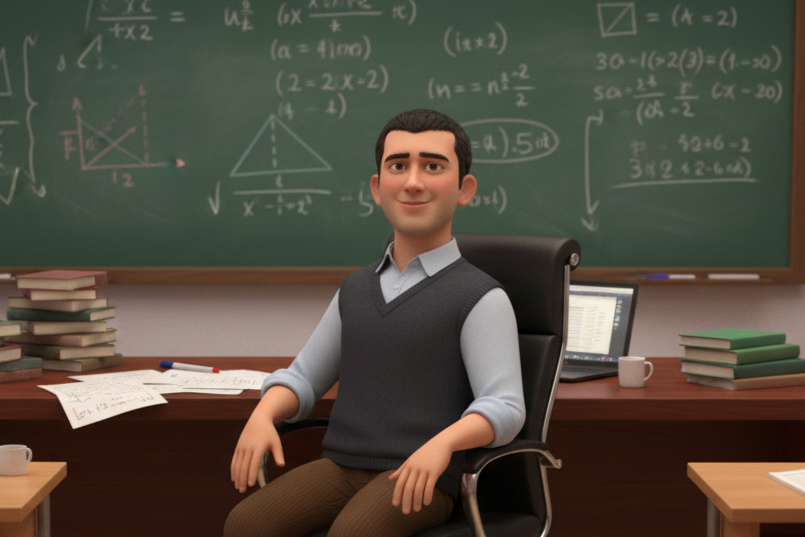
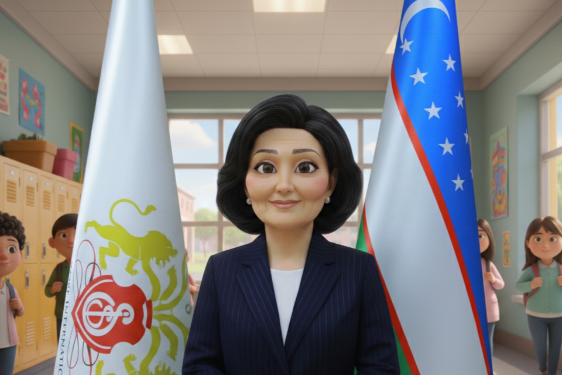
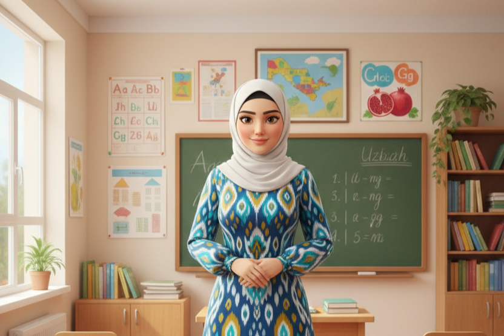

A day full of gratitude, performances, and love for our teachers.
📖 About the Event
Teachers’ Day 2025 at 7 Newton
Teachers’ Day 2025 at 7 Newton was a warm and memorable occasion dedicated to showing respect and gratitude to our
teachers. The morning began with excitement as students arrived carrying flowers, small gifts, and handwritten
notes. The school hallways were decorated with posters, balloons, and banners made by different classes, each
carrying messages of thanks. It was clear that students had spent time and effort preparing to make the day
special.
The celebration started with short speeches. A few students came forward to share personal stories of how their
teachers had guided them and encouraged them through challenges. Parents also spoke, thanking the school and the
staff for their dedication to helping children grow both academically and personally. Several alumni joined the
event as well, reminding current students that the lessons they learn at 7 Newton will continue to help them long
after graduation.
After the speeches, the mood shifted to performances. Groups of students sang songs, recited poems, and performed
short skits. Each act was centered on the theme of appreciation and respect for teachers. Some were lighthearted
and funny, while others were emotional, but all of them carried the same message: teachers play an important role
in shaping lives. The variety of performances kept the audience engaged, and many teachers could be seen smiling
and laughing at the creativity of their students.
One of the highlights of the day was the “Wall of Gratitude.” Each class had written thank-you notes for their
teachers and displayed them in the main hall. Some notes were short and simple, while others were longer and more
personal, but together they created a colorful and meaningful collection of appreciation. Teachers took time to
read the notes, often stopping to smile or laugh at the memories students had written down.
The school also recognized teachers formally with small certificates of appreciation. These were not only for
academic teaching but also for qualities like patience, kindness, and encouragement. It was a reminder that
teaching is about more than just lessons—it is also about building confidence and character.
As the program came to an end, students presented flowers to their teachers. Some classes had also prepared small
videos or slideshows with photos from the school year, which added a personal and touching element to the day.
Finally, the teachers were invited to a tea and snack reception prepared by the students and parents. This gave
everyone a chance to relax, talk, and enjoy the day in a less formal way.
Teachers’ Day 2025 at 7 Newton was not just about celebration—it was about recognition. It reminded students how
much effort teachers put into their work every day and how deeply their influence is felt. For the teachers, it
was a simple but meaningful sign that their dedication is noticed and appreciated.
🌟 Our Teachers

Mr. Miraziz
Subject: Mathematics
Known for making numbers feel alive, he inspires logical thinking and problem-solving in every lesson.
Mr. Muhammadali
Subject: History & Etiquette
A storyteller of the past and a guide in values, he helps students learn both culture and character.

Ms. Malika
Subject: 2nd Foreign Language
She opens the doors to new worlds by teaching languages, bridging cultures and building connections.
Mr. Matin
Subject: Informatics
Always encouraging innovation, he guides students in understanding the digital world and coding solutions.
Mr. Jombulat
Subject: Physical Education
With energy and spirit, he encourages teamwork, discipline, and a love for staying active.

Ms. Malika
Subject: Physical Education
With energy and spirit, she encourages teamwork, discipline, and a love for staying active.

Mr. Andrey
Subject: Physics, Astronomy, Chemistry, Geography
A scientist at heart, he brings the wonders of the universe, science, and the earth closer to students.

Ms. Khumora
Subject: Arts
Inspires creativity and imagination through colors, shapes, and artistic expression.

Ms. Nargiza
Subject: IT Programming
Guides future developers in building logic, creativity, and problem-solving through programming.
Ms. Gulfina
Subject: English Language
Teaches English with passion, making literature and communication skills shine in every student.
Ms. Maftuna
Subject: Russian Language
Brings the richness of Russian literature and language, expanding students’ cultural horizons.
Ms. Aya
Subject: English
Dedicated to teaching English with clarity and creativity, making every lesson enjoyable.
Ms. Lydia
Subject: Economics & Finance
Transforms complex economic ideas into practical lessons that prepare students for real-world success.
Ms. Esmira
Subject: Music Culture
Through music and science, she creates harmony between art and knowledge in students’ lives.
Ms. Aziza
Subject:Russian
Creates perfect meanings of live through science of Russian Language!😊

Mr. Abdulmalik
Subject: Mathematics
Passionate about problem-solving, he makes mathematics exciting and accessible to every student.
Ms. Sumera
Subject: Business English
She equips learners with the language of business, preparing them for success in the professional world.
Mr. Alexander
Subject: Information Technology
Guides students in mastering modern technologies, inspiring creativity in the digital age.

Ms. Nodira
Position: Head Teacher
A leader and mentor, she provides direction, wisdom, and encouragement to both students and teachers.
Ms. Malohat
Position: Administration
Ensures smooth organization and management, supporting the entire school community with dedication.
Mr. Yasin
Subject: Business English
Equips students with the language of business, preparing them for international success.

Ms. Shohinur
Subject: Uzbek Language
Passionately teaches the beauty and richness of the Uzbek language, connecting students to their heritage.
Ms. Zahra Razmi
Subject: Business Studies
Guides students in understanding the foundations of business, inspiring future entrepreneurs.
📸 Event Highlights (We will add your photos soon!)